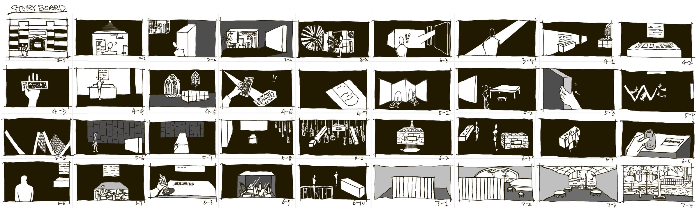

The journey
This storyboard maps the visitor's journey through the exhibition, where each interaction with installations reveals the material's unique qualities. By engaging with recycled products and their re-creation, the exhibition evolves into a temporary maker space — an environment of experimentation and collective making. At the same time, the art corridor functions as a public passage that connects the interior space with the Yarra River, extending the dialogue between material reuse and the city's cultural landscape.
